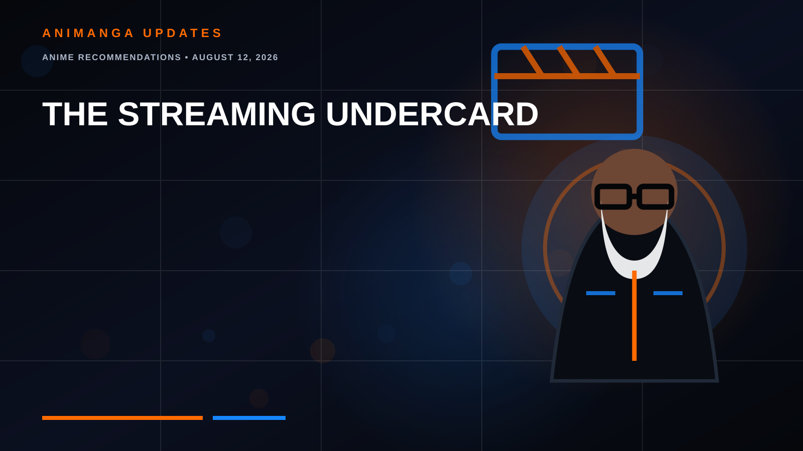
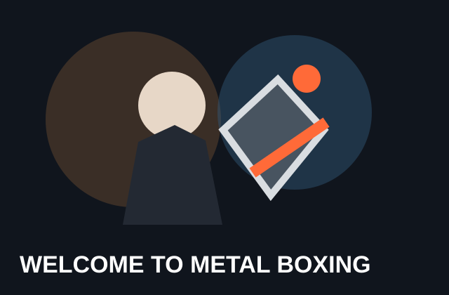
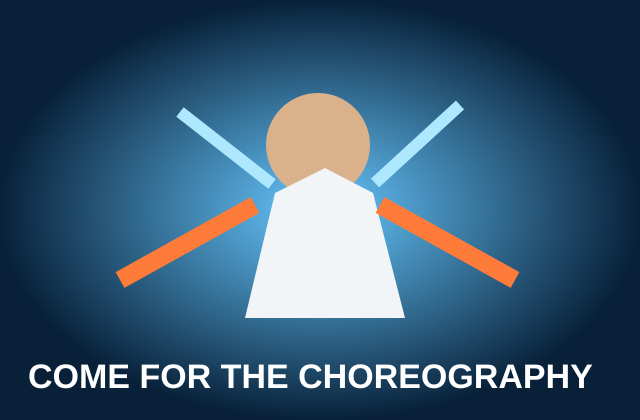
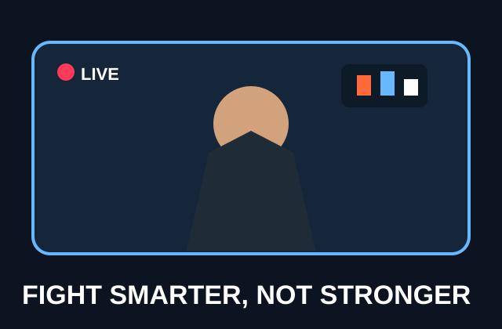
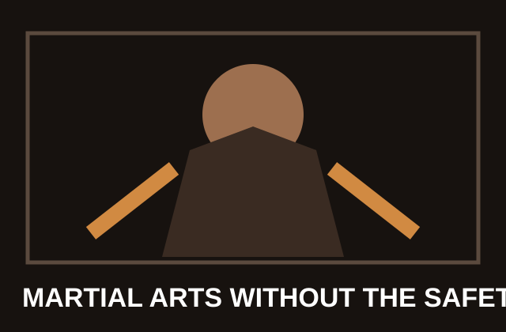
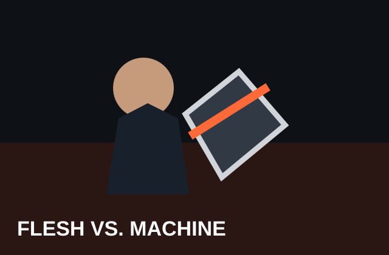
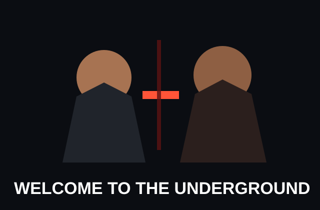

THE STREAMING UNDERCARD
8 Fighting Anime You Should Be Watching
ANIME RECOMMENDATIONS • AUGUST 12, 2026
Best Fighting Anime on Streaming No One Is Talking About
Everybody knows the heavyweights. These are the anime waiting in the other corner: martial arts, boxing, street fights and underground tournaments hiding deeper in today's streaming libraries.

By RogueVerse Studio | August 12, 2026
Ask for a fighting anime recommendation and the usual suspects arrive immediately: Dragon Ball, Baki, Jujutsu Kaisen, Demon Slayer. Great shows, but what happens when you've already seen the headliners?
Streaming libraries are hiding an entire undercard of anime built around martial arts, boxing, street fights, underground tournaments and fighters who apparently regard functioning ribs as optional.

BUCCHIGIRI?!
Supernatural Street Brawling
This one is weird, and that is part of the appeal. BUCCHIGIRI?! throws delinquent-school brawling, absurd comedy and supernatural powers into the same blender. MAPPA's colorful production makes it a strong pick for viewers who want exaggerated street fighting without another enormous battle-shonen commitment.
Watch it for: delinquent fights, colorful animation, supernatural weirdness and chaotic energy.

LOOKISM
The Street-Fight Sleeper
Lookism isn't marketed primarily as a fighting anime. That's exactly why it belongs here. The story follows a bullied teenager who mysteriously gains the ability to switch between two radically different bodies. Its social drama gradually reveals a much rougher world of bullies, gangs and frighteningly capable fighters.
Watch it for: street fights, underdog storytelling and characters much more dangerous than they initially appear.

LEVIUS
Welcome to Metal Boxing
Imagine boxing after somebody decided ordinary boxing wasn't sufficiently hazardous. Levius takes place in a steampunk world where fighters equipped with mechanical prosthetics compete in brutal metal-boxing matches. Its CG presentation may require an adjustment period, but its combat has an unusual mechanical rhythm.
Watch it for: boxing, cybernetic fighters, steampunk atmosphere and something genuinely different.

THE GOD OF HIGH SCHOOL
Come for the Choreography
Forget the story for a moment. We're here to fight, and few anime understand that assignment as enthusiastically as The God of High School. Its martial-arts tournament unleashes taekwondo, karate, wrestling, weapons and increasingly ridiculous supernatural abilities.
Watch it for: martial-arts choreography, tournament battles and almost zero interest in keeping power levels reasonable.

VIRAL HIT
Fight Smarter, Not Stronger
Hobin Yu is a bullied, physically unimpressive teenager who discovers an online channel teaching viewers how to defeat stronger opponents. He starts fighting bullies on camera for money. Early fights revolve around strategy and finding ways for an inexperienced fighter to survive rather than instant superhuman power.
Watch it for: street fighting, strategy, underdog victories and internet-era insanity.

GAROUDEN: THE WAY OF THE LONE WOLF
Martial Arts Without the Safety Rails
Garouden follows Juzo Fujimaki into a dangerous underground fighting tournament and occupies a niche surprisingly few modern anime attempt: relatively grounded adult martial-arts combat.
Watch it for: grappling, martial-arts technique, underground fighting and a darker adult tone.

MEGALOBOX
Flesh vs. Machine
MEGALOBOX follows underground fighter Junk Dog into Megalonia, where boxers normally use mechanical Gear to amplify their abilities. The result becomes flesh against machinery, technique against technology and an underdog walking into matches where opponents hold every conceivable advantage.
Then NOMAD: MEGALOBOX 2 takes the story somewhere far more mature and introspective.
Watch it for: boxing, atmosphere, underdog storytelling and mature writing.

KENGAN ASHURA
Welcome to the Underground
Kengan Ashura imagines corporations settling business disputes through gladiatorial combat. Companies hire fighters. Fighters enter the arena. Winner gets the business deal. Capitalism apparently discovered boss battles.
Watch it for: tournament fights, MMA influences, absurd fighters and relentless combat.
THE ONE WE'RE REALLY SLEEPING ON: VIRAL HIT
If you only choose one anime from this list that you've never watched, make it Viral Hit. Its protagonist initially isn't trying to become the strongest fighter alive. He's trying to figure out how to survive getting punched in the face. That makes every improvement matter.
ROGUEVERSE VERDICT: WATCH THE UNDERCARD
The best thing about fighting anime is that “fighting” isn't really one genre. Kengan Ashura gives you underground MMA spectacle. MEGALOBOX gives you boxing drama. Garouden explores hard-edged martial arts. Viral Hit turns fighting into an underdog strategy game. BUCCHIGIRI?! throws supernatural chaos into delinquent brawls. Levius bolts machinery onto boxing. Lookism hides increasingly serious street fighting underneath a social drama. And The God of High School eventually looks at the laws of physics and politely asks them to leave.
You don't need another list telling you to watch Dragon Ball Z. Sometimes the best fight is happening on the undercard.
ROGUEVERSE TOP THREE
#3 Kengan Ashura: Best pure fighting experience.
#2 Viral Hit: Best hidden gem.
#1 MEGALOBOX: Best overall anime.
What fighting anime deserves more attention?
Streaming availability reflects U.S. catalogs checked in August 2026 and can change by region or over time.
Copyright & Ownership Notice: All anime titles, characters, logos and promotional artwork referenced in this article belong to their respective creators, publishers, studios, distributors and other rights holders. RogueVerse Media claims no ownership of third-party intellectual property. Promotional imagery is presented for editorial identification and commentary. RogueVerse-created editorial illustrations are original and do not depict copyrighted characters.